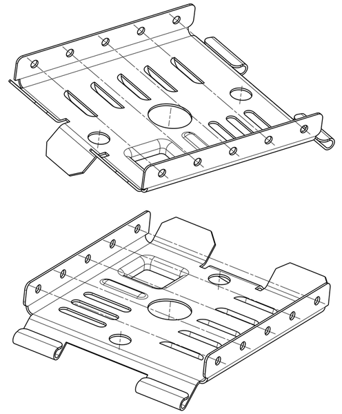
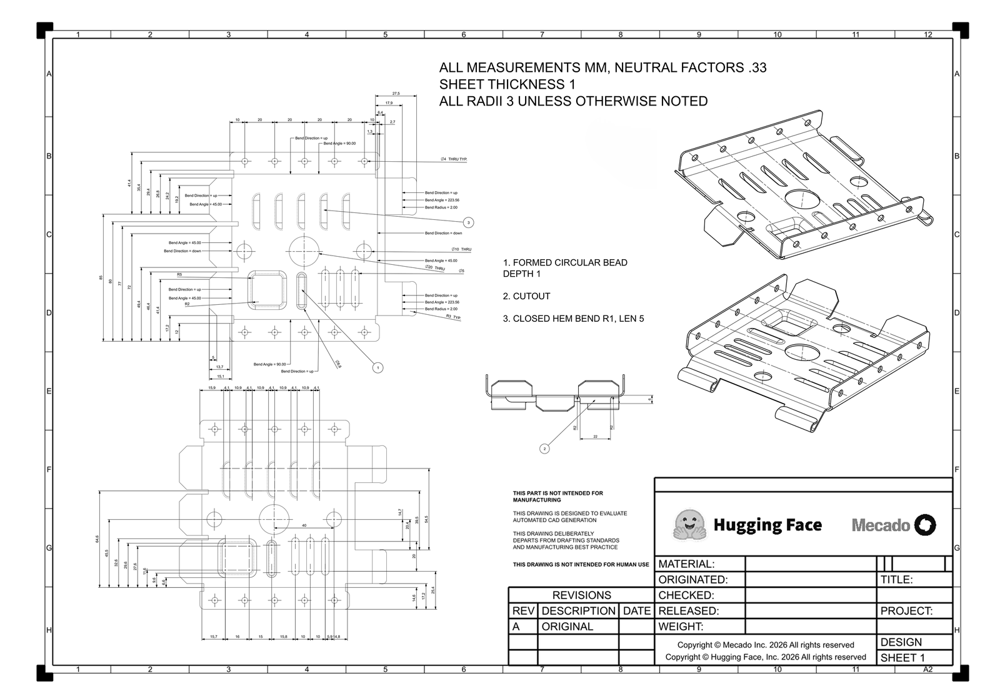

Konzept
Creo Elements/Direct → SOLIDWORKS
Ein KI-Agent liest Geometrie und Zeichnung und beschreibt die Features als JSON. Ein Add-in baut sie über die SOLIDWORKS-API nativ auf. Automatische Prüfungen und regelmäßige Reviews durch Konstrukteure verbessern den Agenten.
↺ Die Prüfung meldet Abweichungen automatisch an den Agenten zurück.

CED-Teil
STEP / Parasolid, Zeichnung, Model-Manager-Daten
KI-Agent
erkennt Features und Konstruktionsabsicht
{ "features": [
{"op": "base_flange"},
{"op": "edge_flange"},
{"op": "hem"},
{"op": "form_tool"},
{"op": "cut"}
] }Part-IR
deklaratives JSON, gleich für Creo und SOLIDWORKS
Replayer
C#-Add-in auf der SOLIDWORKS-COM-API
Prüfung
Geometrie gegen Original, Baum zurücklesen
.SLDPRT
nativ mit Feature-Baum, Gleichungen, Eigenschaften
Expertenreview, z. B. alle zwei Wochen
Konstrukteure bewerten eine Stichprobe von Zwischenergebnissen: pass oder fail, mit Begründung. Daraus werden Regeln und Beispiele für den Agenten.
Beispielteil
Blechteil aus dem öffentlichen Benchmark CADGenBench (Hugging Face, Mecado), Aufgabe 115: Abwicklung mit Biegeangaben, Schnitt und zwei isometrische Ansichten. Rechts der Feature-Baum, den der Agent daraus vorschlägt.


- #Feature-Baum (Vorschlag des Agenten)IR-op
- 0Blechparameter: Dicke 1, Radius 3, K-Faktor 0,33sheet_metal
- 1Boden, Kontur aus der Abwicklungbase_flange
- 22 × Lasche 90° nach oben, je 5 × Ø4 im Raster 20edge_flange
- 34 × Lasche 45°, nach oben und untenedge_flange
- 42 × Rollung 223,56°, R2hem
- 5Pos. 3: geschlossener Umschlag R1, Länge 5hem
- 6Pos. 1: Sicke um Langloch Ø6,6, Tiefe 1form_tool
- 7Pos. 2: rechteckige Ausprägung R5 / R2form_tool
- 8Ø20, 2 × Ø10, 3 × Langloch 5cut
- 9Abwicklung gegen die Zeichnung prüfenflat_pattern
Mapping: Part-IR → SOLIDWORKS-API
Prinzip der SOLIDWORKS-API: erst auswählen, dann die Feature-Methode aufrufen. Einheiten intern in Meter.
Gekürzt, nicht kompiliert. Select…, QueryEdges u. ä. sind eigene Hilfsfunktionen.
Modelle
Der Agent schreibt nur JSON. Das Modell ist austauschbar und wird am selben Teilesatz verglichen.
GPT-6 Astra · OpenAI
Spitzenmodell für Reasoning und Agenten, 1M Token Kontext. Für Pilot und Benchmark.
Kimi K3.1 Pro · Moonshot AI
Stärkstes offenes Modell, Gewichte bis 4. 11. 2026 angekündigt. Läuft im eigenen Rechenzentrum, braucht aber einen großen GPU-Server.